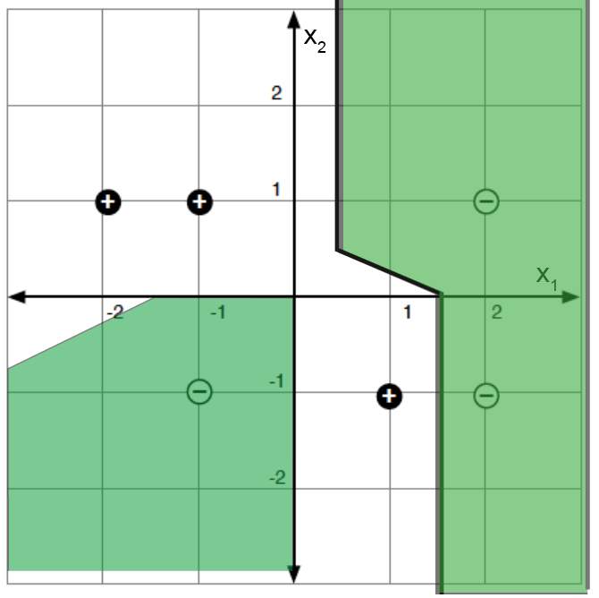
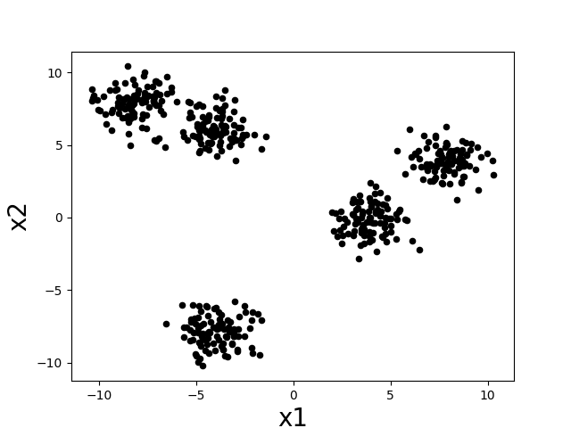
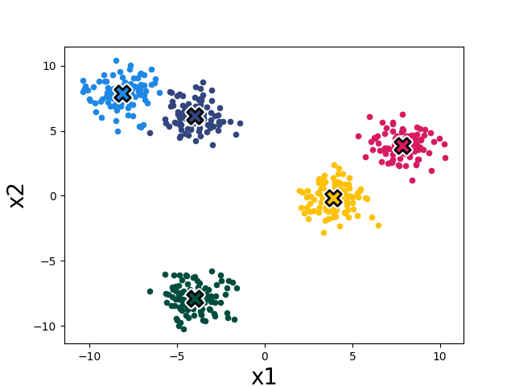
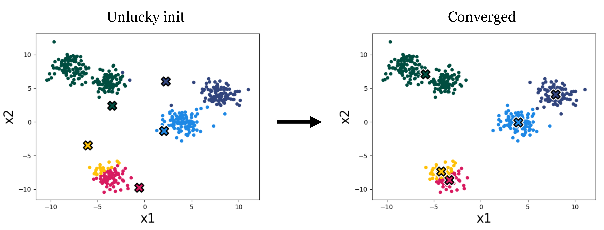
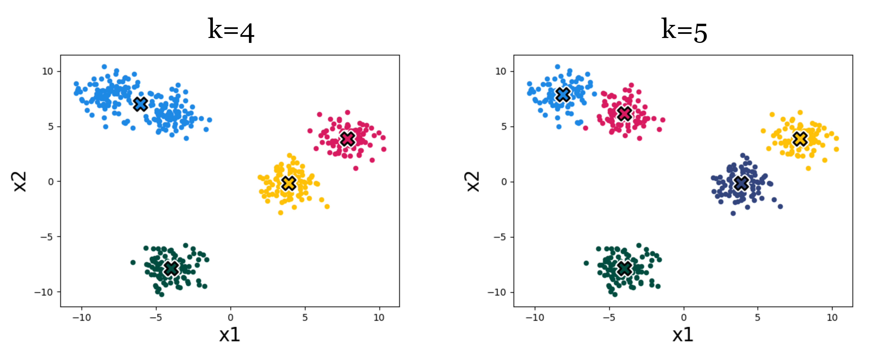
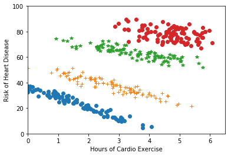
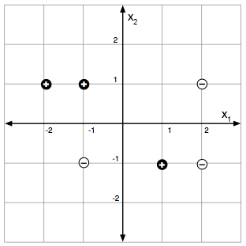
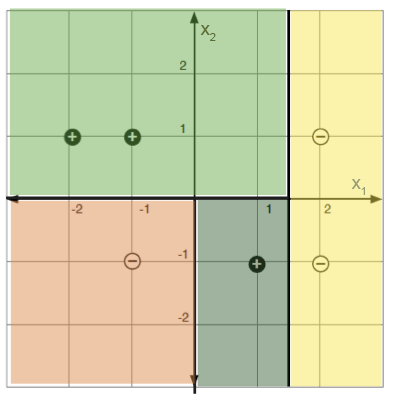
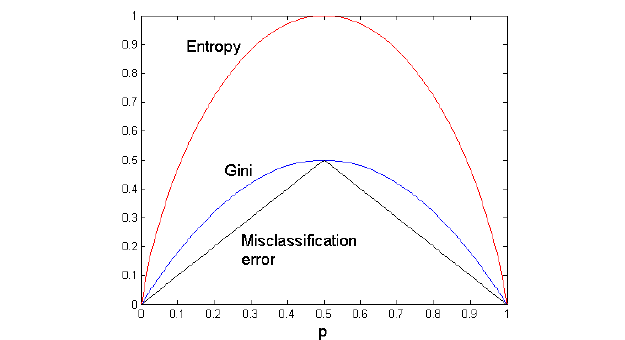

MIT 6.390 Intro to Machine Learning: 10 Non-parametric Models (Repost)
Reposted from Chapter 10: Non-parametric Models of the MIT 6.390 Intro to Machine Learning course notes, © Massachusetts Institute of Technology and the 6.390 (formerly 6.036) course staff, licensed under CC BY-NC-SA 4.0. Changes made on 2026-11-20: converted from the course website to Markdown; side notes and boxed notes shown as quotes; links to other chapters point to the original site; a figure reproduced from Breiman et al. (1984) left out, since the course license doesn’t cover it. This post is shared under the same license.
Neural networks have adaptable complexity in the sense that we can try different architectures and use cross-validation to pick one that works well on our data. In this chapter we turn to models that adapt their complexity automatically to the training data: the name non-parametric is misleading: these methods do have parameters, but the size of the parameterization can grow as we acquire more data, rather than being fixed in advance.
The methods we consider here tend to have the form of a composition of simple models:
Nearest neighbor models: Section 10.1 where we don’t process data at training time, but do all the work when making predictions, by looking for the closest training example(s) to a given new data point.
\(k\)-means clustering methods: Section 10.2 where we partition data into groups based on similarity without predefined labels, adapting complexity by adjusting the number of clusters.
Tree models: Section 10.3 where we partition the input space and use different simple predictions on different regions of the space; the hypothesis space can become arbitrarily large allowing finer and finer partitions of the input space.
Ensemble methods: Section 10.4 in which we train several base learners and combine their outputs; this decreases the estimation error. We focus on bagging and random forests applied to trees.
Even in the era of large neural networks, these methods are worth knowing: they are fast, have few hyperparameters, often perform competitively, and can be more interpretable (decision trees are directly readable; nearest neighbors can point to the training examples behind a prediction).
10.1 Nearest Neighbor
In nearest-neighbor models, we don’t do any processing of the data at training time – we just remember it! All the work is done at prediction time.
Input values \(x\) can be from any domain \(\mathcal X\) (\(\mathbb{R}^d\), documents, tree-structured objects, etc.). We just need a distance metric, \(d: \mathcal X \times \mathcal X \rightarrow \mathbb{R}^+\), which satisfies the following, for all \(x, x', x'' \in \mathcal X\): \[\begin{aligned} d(x, x) & = 0 \\ d(x, x') & = d(x', x) \\ d(x, x'') & \leq d(x, x') + d(x', x'') \end{aligned}\]
Given a dataset \(\mathcal{D}= \{(x^{(i)},y^{(i)})\}_{i=1}^n\), our predictor for a new query \(x \in \mathcal X\) is \[h(x) = y^{(i^*)} \quad \text{where} \quad i^* = \arg\min_i d(x, x^{(i)}),\] with ties broken at random.
This same algorithm works for regression and classification!
Geometrically, this partitions the input space into a Voronoi diagram: one region per training point, with the prediction in each region being that point’s \(y\) value.

Voronoi diagram: each region contains the points closest to one training example.
There are several useful variations on this method. In \(k\)-nearest-neighbors, we find the \(k\) training points nearest to the query point \(x\) and output the majority \(y\) value for classification or the average for regression. We can also do locally weighted regression in which we fit locally linear regression models to the \(k\) nearest points, possibly giving less weight to those that are farther away. In large data-sets, it is important to use good data structures (e.g., ball trees) to perform the nearest-neighbor look-ups efficiently (without looking at all the data points each time).
10.2 \(k\)-means Clustering
Clustering is the problem of automatically discovering meaningful groupings in a dataset, without pre-assigned labels. A doctor may notice that their patients come in cohorts that respond differently to different treatments; a biologist may identify that bats and whales, despite outward appearances, both belong to the same category (“mammal”). Once such groupings are found, they can be used to interpret the data and to make decisions per group.
10.2.1 Clustering formalisms
Mathematically, clustering resembles classification (we want a mapping from datapoints \(x\) to categories \(y\)), except the categories are not predefined. Instead, they are partitions of an unlabeled dataset \(\{x^{(i)}\}_{i=1}^n\), discovered from how the data is distributed in input space. This makes clustering an unsupervised learning problem.
Intuitively, a “cluster” is a group of datapoints that are all nearby to each other and far away from other clusters. Let’s consider the following scatter plot. How many clusters do you think there are?

Figure 10.1: A dataset we would like to cluster. How many clusters do you think there are?
There seem to be about five clumps of datapoints and those clumps are what we would like to call clusters. If we assign all datapoints in each clump to a cluster corresponding to that clump, then we might desire that nearby datapoints are assigned to the same cluster, while far apart datapoints are assigned to different clusters.
In designing clustering algorithms, three critical things we need to decide are:
How do we measure distance between datapoints? What counts as “nearby” and “far apart”?
How many clusters should we look for?
How do we evaluate how good a clustering is?
We will see how to begin making these decisions as we work through a concrete clustering algorithm in the next section.
10.2.2 Loss and algorithm
k-means is one of the simplest clustering algorithms. It picks cluster assignments \(y^{(i)} \in \{1, \ldots, k\}\) to minimize the total within-cluster variance:
\[\sum_{j=1}^k \sum_{i=1}^n \mathbb{1}(y^{(i)} = j) \lVert x^{(i)} - \mu^{(j)} \rVert^2, \tag{10.1}\]
where \(\mu^{(j)} = \frac{1}{N_j} \sum_{i=1}^n \mathbb{1}(y^{(i)} = j) x^{(i)}\) is the mean of cluster \(j\), \(N_j = \sum_i \mathbb{1}(y^{(i)} = j)\) is its size, and \(\mathbb{1}(\cdot)\) is the indicator function. Each inner sum is one cluster’s within-cluster variance; the outer sum totals these across all \(k\) clusters.
The k-means algorithm minimizes this loss by alternating two steps: (1) reassign each datapoint to the cluster with the nearest mean, and (2) recompute each cluster mean from the points now assigned to it. Both steps are non-increasing in the loss, so the algorithm converges. Figure 10.2 shows the first three iterations on our toy dataset; Figure 10.3 shows the converged result after four iterations.

Figure 10.2: The first three steps of running the k-means algorithm on this data. Datapoints are colored according to the cluster to which they are assigned. Cluster means are the larger X’s with black outlines.

Figure 10.3: Converged result.
In full detail:
10.2.2.1 Using gradient descent to minimize the k-means objective
We can also use gradient descent. Rewrite the objective as a differentiable function of \(\mu\) alone, by choosing the optimal assignment for each point on the fly: \[L(\mu) = \sum_{i=1}^n \min_j \lVert x^{(i)} - \mu^{(j)} \rVert^2.\] Run gradient descent on \(L(\mu)\), then read off the cluster assignments from the optimized \(\mu\): \[y^{(i)} = \arg\min_j \lVert x^{(i)} - \mu^{(j)} \rVert^2.\] This converges to a local minimum of Equation 10.1, just like the alternating algorithm; it isn’t guaranteed to find the global minimum because \(L\) is non-convex.
10.2.3 Practical considerations
10.2.3.1 Importance of initialization
Both variants only converge to a local minimum, so the result depends on the initialization of the cluster means. Figure 10.4 shows a different initialization on our toy data leading to a worse clustering:

Figure 10.4: With the initialization of the means to the left, the yellow and red means end up splitting what perhaps should be one cluster in half.
A variety of methods have been developed to pick good initializations (see, for example, the k-means++ algorithm). One simple option is to run the standard k-means algorithm multiple times, with different random initial conditions, and then pick from these the clustering that achieves the lowest k-means loss.
10.2.3.2 Importance of k
The number of clusters \(k\) is a hyperparameter we have to pick (some advanced algorithms can infer it automatically, but k-means is not one of them).

Figure 10.5: Example of k-means run on our toy data, with two different values of k. Setting k=4, on the left, results in one cluster being merged, compared to setting k=5, on the right. Which clustering do you think is better? How could you decide?
Figure 10.5 shows an example of the effect. Which result looks more correct? It can be hard to say! Using higher k we get more clusters, and with more clusters we can achieve lower within-cluster variance – the k-means objective will never increase, and will typically strictly decrease as we increase k. Eventually, we can increase k to equal the total number of datapoints, so that each datapoint is assigned to its own cluster. Then the k-means objective is zero, but the clustering reveals nothing. Clearly, then, we cannot use the k-means objective itself to choose the best value for k. In Section 10.2.4, we will discuss some ways of evaluating the success of clustering beyond its ability to minimize the k-means objective, and it’s with these sorts of methods that we might decide on a proper value of k.
Hierarchical clustering sidesteps picking a single \(k\) by producing a tree of clusterings at multiple granularities (coarse near the root, fine near the leaves), useful for discovering taxonomies (e.g., species, families, kingdoms). See SKLEARN’s cluster module for many other clustering algorithms.
10.2.3.3 k-means in feature space
Clustering algorithms group data based on a notion of similarity, and thus we need to define a distance metric between datapoints. This notion was also central to nearest-neighbor methods (Section 10.1), and our choice of distance metric can have a big impact on the results we will find.
Our k-means algorithm uses the Euclidean distance, i.e., \(\lVert x^{(i)} - \mu^{(j)} \rVert\), with a loss function that is the square of this distance. We can modify k-means to use different distance metrics, but a more common trick is to stick with Euclidean distance but measured in a feature space. Just like we did for regression and classification problems, we can define a feature map from the data to a nicer feature representation, \(\phi(x)\), and then apply k-means to cluster the data in the feature space.
As a simple example, suppose we have two-dimensional data that is very stretched out in the first dimension and has less dynamic range in the second dimension. Then we may want to scale the dimensions so that each has similar dynamic range, prior to clustering. We could use standardization, like we did in Chapter 5.
If we want to cluster more complex data, like images, music, chemical compounds, etc., then we will usually need more sophisticated feature representations. One common practice these days is to use feature representations learned with a neural network. For example, we can use an autoencoder to compress images into feature vectors, then cluster those feature vectors.
10.2.4 How to evaluate clustering algorithms
Evaluation is hard for clustering, and for unsupervised methods in general, because there are no target values to predict. The k-means loss alone is not enough: as in Section 10.2.3.2, taking \(k\) very large drives the loss to zero without yielding any insight. A few practical alternatives:
- Consistency across subsamples or hyperparameter choices (e.g., random initializations). If bootstrapped runs produce very different clusters, the result is fragile.
- Ground truth: if a few points are known to belong together, check whether they end up in the same discovered cluster.
- Downstream task success: if the clusters feed into a downstream model (e.g., one regression fit per cluster, as in Figure 10.6), measure success on that downstream task.
Clustering is also frequently used for visualization and interpretability, where human judgment guides the choice of algorithm and validates the result.

Figure 10.6: Averaged across the whole population, risk of heart disease positively correlates with hours of exercise. However, if we cluster the data, we can observe that there are four subgroups of the population which correspond to different age groups, and within each subgroup the correlation is negative. We can make better predictions, and better capture the presumed true effect, if we cluster this data and then model the trend in each cluster separately.
10.3 Tree Models
From distance to splits. Where nearest-neighbors and k-means used distance to organize the input space into regions, trees take a different route: they partition the input space by axis-aligned splits, with no distance metric needed. The partition is described by a (typically binary) tree that recursively splits the space; we then fit a very simple predictor in each leaf.
Tree methods differ in their split family (often axis-aligned), the predictors used in the leaves (often constants), how they control complexity, and the fitting algorithm.
A key advantage of trees is interpretability: a human can follow the decisions a tree makes. This matters in domains like medicine, where experts need to trust algorithmic recommendations. Trees work best when features carry useful information individually or in small groups (e.g., a set of clinical measurements of a patient); they’re less suitable for high-dimensional inputs like raw images.
Example
Repost note: The original notes show a sample tree here, reproduced from Breiman, Friedman, Olshen and Stone (1984). The course license doesn’t cover that figure, so see it in the original chapter.
We’ll concentrate on CART and ID3: they greedily build a partition with axis-aligned splits and a constant model in each leaf. The interesting questions are how to choose the splits and how to control complexity; regression and classification versions are very similar.
CART (“classification and regression trees”) and ID3 (“iterative dichotomizer 3”) were invented independently in the statistics and AI communities.
For a concrete example: labeled points in a 2-D feature space (left) and a decision-tree partition that classifies them perfectly (right).


10.3.1 Regression
The predictor is made up of
a partition function, \(\pi\), mapping elements of the input space into exactly one of \(M\) regions, \(R_1, \ldots, R_M\), and
a collection of \(M\) output values, \(O_m\), one for each region.
Let \(I = \{1, \ldots, n\}\) index the training set, and let \(I_m = \{i \in I \mid x^{(i)} \in R_m\}\) collect the indices in region \(R_m\). Given a partition, the natural choice for the constant output is the per-region average: \[O_m = \text{average}_{i \in I_m}\, y^{(i)}.\] The natural per-region error is the sum of squared errors: \[E_m = \sum_{i \in I_m}(y^{(i)} - O_m)^2.\] Ideally we’d choose the partition to minimize \[\lambda M + \sum_{m=1}^M E_m,\] where \(\lambda\) regularizes against having too many regions.
It suffices to search over partitions of the training data (not the whole input space), but even that problem is NP-complete; hence the greedy approach below.
10.3.1.1 Building a tree
So we’ll be greedy: pick the best single split by some criterion, then recurse. For now we pick the split that minimizes the total sum-of-squared-errors across the two children; we’ll consider other criteria later.
In the pseudocode below, BuildTree operates on a subset \(I\) of the training indices (so the recursive calls work on the children of each split). For a candidate split at dimension \(j\) and value \(s\), we write \(I^+_{j,s}\) and \(I^-_{j,s}\) for the two children, and \(\hat{y}^\pm_{j,s}\) for their average \(y\) values. The hyperparameter \(k\) is the largest leaf size we’ll allow.
In practice, we call BuildTree initially with \(I = \{1,\ldots,n\}\) (the whole training set), and the recursion does the rest.
Each call considers \(O(dn)\) splits: \(d\) feature dimensions, with \(O(n)\) candidate split points per dimension (only the gaps between consecutive sorted data points matter; any other split gives the same training error).
10.3.2 Classification
The strategy for building and pruning classification trees is very similar to that for regression. We reuse the same partition machinery: regions \(R_m\) with index sets \(I_m\), region predictor \(O_m\), and region error \(E_m\). Only the definitions of \(O_m\) and \(E_m\) change.
The natural region predictor is the majority class among the training points in \(R_m\): \[O_m = \text{majority}_{i \in I_m}\, y^{(i)},\] and the natural region error is the count of misclassified points: \[E_m = \bigl|\{i \in I_m \mid y^{(i)} \neq O_m\}\bigr|.\] We will also need the empirical class probability in region \(m\): \[\hat{P}_{m,k} = \frac{\bigl|\{i \in I_m \mid y^{(i)} = k\}\bigr|}{N_m}, \qquad N_m = |I_m|.\] For splits, \(\hat{P}_{m,j,s}\) denotes the fraction of points in region \(m\) falling into one branch of the split \((j, s)\), and \(1 - \hat{P}_{m,j,s}\) the other.
10.3.2.1 Splitting criteria
The greedy algorithm needs a way to decide which split to make next; we measure the “impurity” of a child node and pick the split that decreases impurity most. We use entropy: \[Q_m(T) = H(I_m) = -\sum_k \hat{P}_{m,k}\log_2 \hat{P}_{m,k},\] with the convention \(0\log_2 0 = 0\) so \(H\) is well-defined when \(\hat{P} = 0\).
Other impurity measures
Two other common choices are misclassification error \(1 - \hat{P}_{m,O_m}\) and the Gini index \(\sum_k \hat{P}_{m,k}(1 - \hat{P}_{m,k})\). All three vanish on pure regions (\(\hat{P}_{m,0} \in \{0, 1\}\)) and peak near \(\hat{P}_{m,0} = 0.5\), as the impurity curves below show (with \(p = \hat{P}_{m,0}\)). Tradition uses entropy when growing the tree and misclassification error when pruning.

Analogous to regression (where we picked the split minimizing the sum of squared errors \(E_{j,s}\)), here we pick the split minimizing the weighted-average entropy of the two children: \[\hat{H} = \frac{|I^-_{j,s}|}{N_m}\, H(I^-_{j,s}) + \frac{|I^+_{j,s}|}{N_m}\, H(I^+_{j,s}).\] This is equivalent to maximizing the information gain of the test \(x_j = s\): \[\text{infoGain}(x_j = s, I_m) = H(I_m) - \hat{H}.\]
10.3.3 Pruning
Pruning applies to both regression and classification trees: in either case, naive early-stopping criteria can miss splits that are valuable only after a further split, so we grow a large tree and prune it back.
We define the cost complexity of a tree \(T\) (with leaves indexed by \(m\)) as \[C_\alpha(T) = \sum_{m=1}^{|T|} E_m(T) + \alpha |T|,\] where \(|T|\) is the number of leaves and \(E_m\) is whichever per-region error matches the task (sum of squared errors for regression, misclassification count for classification). For a fixed \(\alpha\), “weakest-link” pruning approximately minimizes \(C_\alpha(T)\):
Create a sequence of trees by successively removing the bottom-level split that minimizes the increase in overall error, until the root is reached.
Return the tree in this sequence that minimizes \(C_\alpha\).
We pick \(\alpha\) by cross-validation.
10.3.4 Tree variants and tradeoffs
There are many variations on the tree theme. One is to employ different regression or classification methods in each leaf. For example, a linear regression might be used to model the examples in each leaf, rather than using a constant value.
In the relatively simple trees that we’ve considered, splits have been based on only a single feature at a time, and with the resulting splits being axis-parallel. Other methods for splitting are possible, including consideration of multiple features and linear classifiers based on those, potentially resulting in non-axis-parallel splits. Complexity is a concern in such cases, as many possible combinations of features may need to be considered, to select the best variable combination (rather than a single split variable).
Another generalization is a hierarchical mixture of experts, where we make a “soft” version of trees, in which the splits are probabilistic (so every point has some degree of membership in every leaf). Such trees can be trained using a form of gradient descent. Combinations of bagging, boosting, and mixture tree approaches (e.g., gradient boosted trees) and implementations are readily available (e.g., XGBoost).
Trees remain a valuable tool: they are interpretable, fast to train, handle multi-class targets and varied loss functions naturally, and expose feature importance. They also perform surprisingly well in practice; random forests and boosted trees are often used as a baseline against which to evaluate more sophisticated models.
10.4 Ensemble methods
A single tree can have high estimation error: small changes in the data can produce very different trees. Ensemble methods combat this by training many predictors and combining their outputs. The techniques we cover here, bagging and random forests, are framework-level ideas that apply to any base learner, but they are most commonly paired with trees, both because trees are high-variance (so averaging helps) and because tree training is cheap.
10.4.1 Bagging
Bootstrap aggregation (bagging) reduces the estimation error of an adaptive predictor by training it on different bootstrap samples of the data and averaging the results.
Construct \(B\) new data sets of size \(n\). Each data set is constructed by sampling \(n\) data points with replacement from \(\mathcal{D}\). A single data set is called a bootstrap sample of \(\mathcal{D}\).
Train a predictor \(\hat{f}^b(x)\) on each bootstrap sample. When the base learner is a tree, the standard tree-building algorithm is used, which considers all features when deciding how to split at each node.
Regression case: bagged predictor is \[\hat{f}_{\text{bag}}(x) = \frac{1}{B} \sum_{b=1}^B \hat{f}^b(x) \; .\]
Classification case (with \(K\) classes): represent each tree’s vote as a one-hot vector \(\hat{f}^b(x) \in \{0,1\}^K\), and average to get the proportion that predicted each class: \[\hat{f}_{\text{bag}}(x) = \frac{1}{B} \sum_{b=1}^B \hat{f}^b(x).\] The bagged prediction is the majority vote: \(\hat{y}_{\text{bag}}(x) = \arg\max_k \hat{f}_{\text{bag}}(x)_k\).
Bagging does come at a cost: any simple interpretability of the base model is lost.
10.4.2 Random Forests
Random forests extend bagging with one extra source of randomness: at each split node, instead of considering all \(d\) features to find the best split, the algorithm picks \(m\) features at random (\(m \leq d\) is a hyperparameter) and chooses the best split among those. This random feature selection further de-correlates the trees, sharpening the gain from voting. In practice, random forests often perform extremely well, even against much fancier methods.
In what follows, \(B\), \(m\), and \(n\) are hyperparameters of the algorithm.
10.5 Summary
The methods in this chapter all share one trait: their complexity grows with the data, rather than being fixed by an architecture chosen up front. Nearest neighbors uses a distance metric to defer all the work to query time. k-means applies the same distance machinery to discover clusters in unlabeled data. Trees take a different route, partitioning the input space by axis-aligned splits, with no distance needed. Ensembles (bagging and random forests) average many trees to drive down variance. None of these require the kind of architectural search that neural networks do, and yet all of them are competitive baselines worth reaching for first.